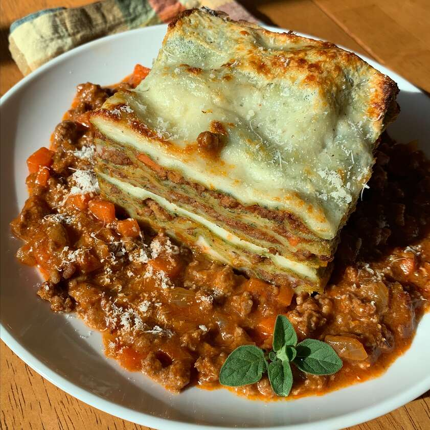

Lasagne

Step by step guide for great lasagne!
Easy to make, will be loved by the whole family,
this recipe is healthy and great!
Ingredients:
- 1/2 cup diced onions
- 1/2 cup celery
- 1 tablespoon olive oil
- 7 ounces ground beef
Steps:
- Saute pancetta in a large stockpot over medium-high heat until fat has rendered, 1 to 2 minutes. Add carrot, celery, onion, and oil. Cook and stir until vegetables have softened and onion is translucent, about 5 minutes. Add beef and pork.
Cook, stirring and mashing meat into small crumbles, until browned, 5 to 7 minutes more.
- Stir wine into the stockpot and bring to a boil. Add tomato sauce and stir; pour in 1 cup broth. Reduce heat to low and partially cover the pot to allow steam to escape. Simmer sauce for 1 hour, stirring occasionally.
- Pour 1 more cup of broth into the sauce. Continue simmering until thick, 1 to 1 1/2 hours. Add more broth only if absolutely necessary; ragu should drop, not run, off a spoon.